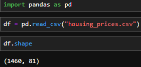
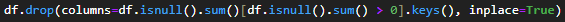
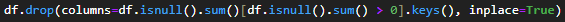
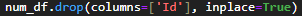
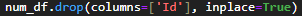
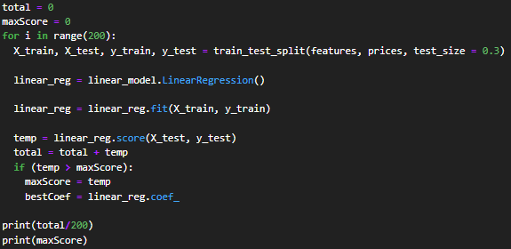

House Prices Prediction
Introduction to the problem and dataset
Compared to a few years ago, the housing market has grown extremely unstable as finding affordable housing
gets more difficult. The percentage of young adults living with parents currently is close to that of those
with the Great
Depression. In this project, we hope to use data mining models to answer questions like: What features in a
house impact
the price the most? These may help new home buyers negotiate pricing if a house is missing a feature.
The dataset used for this project was downloaded from Kaggle.com. Though it was originally compiled by Dean
De Cock for use in data science education. The data on houses in Ames, Iowa. The dataset has 81 columns of
data, from house price and lot area to roof material.
What is regression and how does it work?
Regression is a mathematical and data science model that can be used to understand the relationship between dependent and independent variables. Once the model is created, it can also be used to predict continuous values for given inputs. The first model we will use is the linear regression model, which tries to fit a line of best fit to the data. Like we learned early on in algebra, a line can be represented by y = mx + b, with b being a constant and x representing some input value, in this case the value of a feature, with m being its slope or impact on the final value. For the model, this can be slightly modified by adding more variables, making the equation y = b + m1x1 + m2x2 + m3x3... and so on. First, we guess a line through the data, then we calculate the distance between the actual values and the guessed line and sum the squares of the distances. We then change the m's a little and recalculate the sum. As we get closer to the actual line of best fit, the sum of squares will keep decreasing. This method is called the least-squares method and will get to a line that comes closest to predicting the actual value given the inputs. In the final line, as the m coefficient of a value gets closer to 0, it means its impact on the final y is lower.
Data understanding
Before anything, we need to convert and load the CSV data file into a Pandas dataframe.

Looking at the shape of the data frame, we notice that it contains a really large amount of data, so we will
likely need to find ways to reduce the size to increase modelling speed. But for now onward to just
understand what we are working with. The kaggle page already provides a good description of all the
features. So I moved on for checking for nulls.
 As we see many features haves nulls. We see that there are grouping with similar number of null values.
For instance four garage related features all have 81 null values. Hence there may be multi-collinearity
between these features.
As we see many features haves nulls. We see that there are grouping with similar number of null values.
For instance four garage related features all have 81 null values. Hence there may be multi-collinearity
between these features.
Pre-processing
For the features which barely have an nulls we will take care of that by just dropping rows containing them.
Since is a a really small percent of the entire dataset it should impact our models.
 We also can remove the columns with large null count because a large portion of our dataset doesn't have
those values anyway and my just looking at them it seems to be for extra things not the main house itself.

Next we must also drop all non numerical columns as our regression model doesn't support them and we already
have too many columns so creating dummy columns for each would increase the model training time
significantly.
We also can remove the columns with large null count because a large portion of our dataset doesn't have
those values anyway and my just looking at them it seems to be for extra things not the main house itself.

Next we must also drop all non numerical columns as our regression model doesn't support them and we already
have too many columns so creating dummy columns for each would increase the model training time
significantly.
 Next we also drop the Id column since its an arbitary value for the dataset not actually housing.

Now we move on to separting data into two: independent varaibles (our features) and output or d ependent
variable (the house price).
Next we also drop the Id column since its an arbitary value for the dataset not actually housing.

Now we move on to separting data into two: independent varaibles (our features) and output or d ependent
variable (the house price).

Modeling
For the first experiment I am going to use Linear regression in an attempt to model the dataset. We will use the model trainer from sklearn libary to create this. Before we begin we must further split if the features and price dataframes to create training and testing sets. Finally we import, create and train our linear model on the training subset. We run the model many times keeping track of an average and the best scoring model to ensure accurary. 
Evaluation
After training we get a varity of scores with the highest I have seen being around 0.876.
 Looking at the coefficients of the model with the above score we get.
Looking at the coefficients of the model with the above score we get.
 It seems of the remaining features we can see with has the most positive and negative values on price.
A surpricing thing I see is that LotArea doesn't seem to have much impact on the value which is against I
believe to be true. Some things came as expected like overallQuality has the most positive impact on the
price. Another surpricing positive is that a basement full bathroom seems to have more than twice as much
impact on the price has a non basement full bathroom.
It seems of the remaining features we can see with has the most positive and negative values on price.
A surpricing thing I see is that LotArea doesn't seem to have much impact on the value which is against I
believe to be true. Some things came as expected like overallQuality has the most positive impact on the
price. Another surpricing positive is that a basement full bathroom seems to have more than twice as much
impact on the price has a non basement full bathroom.
Experiment 2
Since we remove many features I am going to now try and see if keeping them. Since using dummies causes more
than 250 columns I decided against this.
 Instead I used LabelEncoder from the sklearn libary to encode each catergorical value into a number. This
leaves us with the strings being useable while also not changing the number of columns.
Instead I used LabelEncoder from the sklearn libary to encode each catergorical value into a number. This
leaves us with the strings being useable while also not changing the number of columns.
 The average score for the this new dataframe was better by 0.02 but the best model was still 0.876.
In terms of coefficent it seems street (Paved or gravel) has the most impact of all dwarfing the second most
positive impact by more than three times. The most negative impact can be caused by with the property has
utilities which is logical.
The average score for the this new dataframe was better by 0.02 but the best model was still 0.876.
In terms of coefficent it seems street (Paved or gravel) has the most impact of all dwarfing the second most
positive impact by more than three times. The most negative impact can be caused by with the property has
utilities which is logical.
Experiment 3
Impact
Conclusion
References
My Dataset:
https://www.kaggle.com/competitions/house-prices-advanced-regression-techniques/data
Code File:
Project 3 Code.ipynb